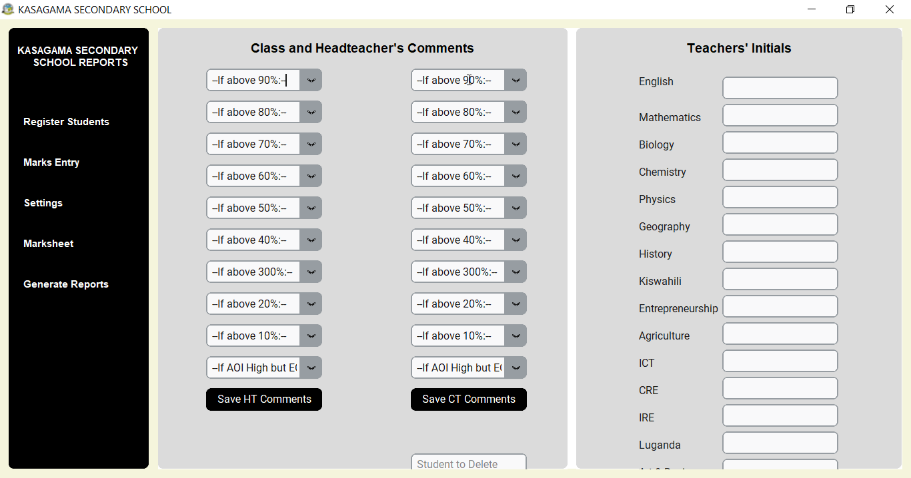

Student Registration

Register new student only once and their record appears throughout the system. Type name and
class in an case (all caps, lowercase, sentence case) and both will be automatically transformed
to all caps.
The Registration section shows you the last 10 registered students. If you have class streams,
you can attach a stream to a student during registration
Marks Entry

Easily enter marks by subject with SENA. Marks entry has been made very easy as you can navigate
to the student by hitting Enter, Arrow Down, or Tab Keys.
You can also return to the previous field with Arrow Up key.
View Marksheet

The marksheet view feature allows you to view the entire results of a class in a selected exam.
Click on a student to view an highlight of their marks.
Marksheet view will help you to quickly detect missing marks for individual students or the whole
class.
Comments and Initials

Easily set initials for subject teachers. Set comments from the same section. Classteachers and
the headteacher select suitable comments from a comments drop-down.
This fixes earlier challenges with comments management including monotonous comments,
inconsistent commenting. Save comments once, uses for all classes.
SENA Automation

SENA automatically assigns grades and descriptors. Only subjects done by the student appear on
the report card. Comments take into account performance in both AOI and End of Term Exams.
Report Card Generation

Generate very high quality report cards for the entire class with one button click. Reports can
be generated and saved in PDF in the user's preferred location.